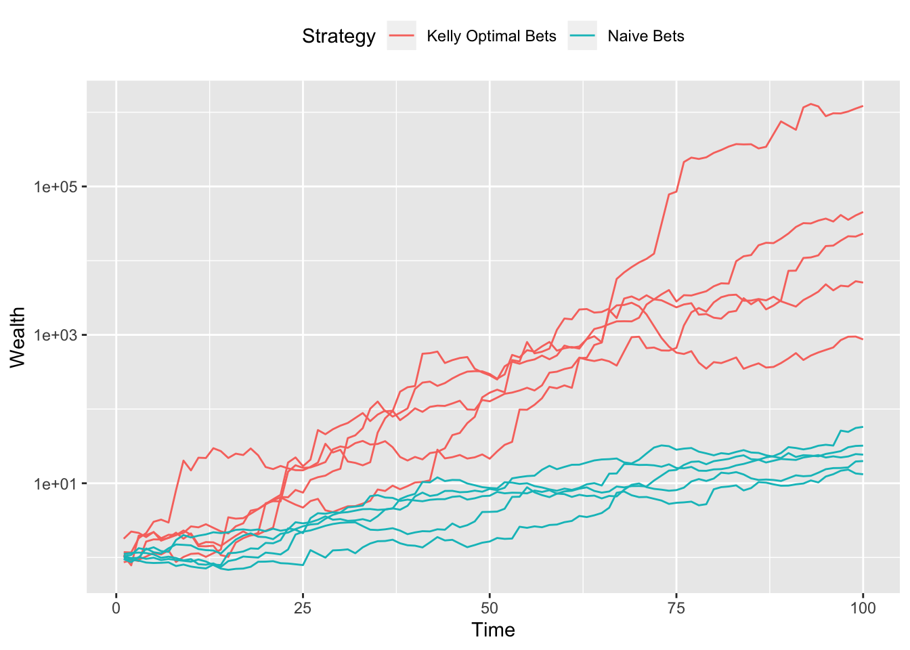

Kelly Gambling
Introduction
In Kelly gambling (Kelly 1956), we are given the opportunity to bet on \(n\) possible outcomes, which yield a random non-negative return of \(r \in {\mathbf R}_+^n\). The return \(r\) takes on exactly \(K\) values \(r_1,\ldots,r_K\) with known probabilities \(\pi_1,\ldots,\pi_K\). This gamble is repeated over \(T\) periods. In a given period \(t\), let \(b_i \geq 0\) denote the fraction of our wealth bet on outcome \(i\). Assuming the \(n\)th outcome is equivalent to not wagering (it returns one with certainty), the fractions must satisfy \(\sum_{i=1}^n b_i = 1\). Thus, at the end of the period, our cumulative wealth is \(w_t = (r^Tb)w_{t-1}\). Our goal is to maximize the average growth rate with respect to \(b \in {\mathbf R}^n\):
\[ \begin{array}{ll} \underset{b}{\mbox{maximize}} & \sum_{j=1}^K \pi_j\log(r_j^Tb) \\ \mbox{subject to} & b \geq 0, \quad \sum_{i=1}^n b_i = 1. \end{array} \]
Example
We solve the Kelly gambling problem for \(K = 100\) and \(n = 20\). The probabilities \(\pi_j \sim \mbox{Uniform}(0,1)\), and the potential returns \(r_j \sim \mbox{Uniform}(0.5,1.5)\) except for \(r_n = {\mathbf 1}\), which represents the payoff from not wagering. With an initial wealth of \(w_0 = 1\), we simulate the growth trajectory of our Kelly optimal bets over \(P = 100\) periods, assuming returns are i.i.d. over time. In the following code, rets is the \(K \times n\) matrix of possible returns with row \(r_i\), while ps is the vector of return probabilities \((\pi_1,\ldots,\pi_K)\).
set.seed(1)
n <- 20 # Total bets
K <- 100 # Number of possible returns
PERIODS <- 100
TRIALS <- 5
## Generate return probabilities
ps <- runif(K)
ps <- ps/sum(ps)
## Generate matrix of possible returns
rets <- runif(K*(n-1), 0.5, 1.5)
shuff <- sample(1:length(rets), size = length(rets), replace = FALSE)
rets[shuff[1:30]] <- 0 # Set 30 returns to be relatively low
rets[shuff[31:60]] <- 5 # Set 30 returns to be relatively high
rets <- matrix(rets, nrow = K, ncol = n-1)
rets <- cbind(rets, rep(1, K)) # Last column represents not betting
## Solve for Kelly optimal bets
b <- Variable(n)
obj <- Maximize(t(ps) %*% log(rets %*% b))
constraints <- list(sum(b) == 1, b >= 0)
prob <- Problem(obj, constraints)
result <- solve(prob)
bets <- result$getValue(b)
## Naive betting scheme: bet in proportion to expected return
bets_cmp <- matrix(0, nrow = n)
bets_cmp[n] <- 0.15 # Hold 15% of wealth
rets_avg <- ps %*% rets
## tidx <- order(rets_avg[-n], decreasing = TRUE)[1:9]
tidx <- 1:(n-1)
fracs <- rets_avg[tidx]/sum(rets_avg[tidx])
bets_cmp[tidx] <- fracs*(1-bets_cmp[n])
## Calculate wealth over time
wealth <- matrix(0, nrow = PERIODS, ncol = TRIALS)
wealth_cmp <- matrix(0, nrow = PERIODS, ncol = TRIALS)
for(i in seq_len(TRIALS)) {
sidx <- sample(K, size = PERIODS, replace = TRUE, prob = ps)
winnings <- rets[sidx,] %*% bets
wealth[,i] <- cumprod(winnings)
winnings_cmp <- rets[sidx,] %*% bets_cmp
wealth_cmp[,i] <- cumprod(winnings_cmp)
}Growth curves for five independent trials are plotted in the figures below. Red lines represent the wealth each period from the Kelly bets, while cyan lines are the result of the naive bets. Clearly, Kelly optimal bets perform better, producing greater net wealth by the final period.
df <- data.frame(seq_len(PERIODS), wealth)
names(df) <- c("x", paste0("kelly", seq_len(TRIALS)))
plot.data1 <- gather(df, key = "trial", value = "wealth",
paste0("kelly", seq_len(TRIALS)),
factor_key = TRUE)
plot.data1$Strategy <- "Kelly Optimal Bets"
df <- data.frame(seq_len(PERIODS), wealth_cmp)
names(df) <- c("x", paste0("naive", seq_len(TRIALS)))
plot.data2 <- gather(df, key = "trial", value = "wealth",
paste0("naive", seq_len(TRIALS)),
factor_key = TRUE)
plot.data2$Strategy <- "Naive Bets"
plot.data <- rbind(plot.data1, plot.data2)
ggplot(data = plot.data) +
geom_line(mapping = aes(x = x, y = wealth, group = trial, color = Strategy)) +
scale_y_log10() +
labs(x = "Time", y = "Wealth") +
theme(legend.position = "top")
Extensions
As observed in some trajectories above, wealth tends to drop by a significant amount before increasing eventually. One way to reduce this drawdown risk is to add a convex constraint as described in Busseti, Ryu, and Boyd (2016, 5.3)
\[ \log\left(\sum_{j=1}^K \exp(\log\pi_j - \lambda \log(r_j^Tb))\right) \leq 0 \]
where \(\lambda \geq 0\) is the risk-aversion parameter. With CVXR, this can be accomplished in a single line using the log_sum_exp atom. Other extensions like wealth goals, betting restrictions, and VaR/CVaR bounds are also readily incorporated.
Session Info
sessionInfo()## R version 3.6.0 (2019-04-26)
## Platform: x86_64-apple-darwin18.5.0 (64-bit)
## Running under: macOS Mojave 10.14.4
##
## Matrix products: default
## BLAS/LAPACK: /usr/local/Cellar/openblas/0.3.5/lib/libopenblasp-r0.3.5.dylib
##
## locale:
## [1] en_US.UTF-8/en_US.UTF-8/en_US.UTF-8/C/en_US.UTF-8/en_US.UTF-8
##
## attached base packages:
## [1] stats graphics grDevices datasets utils methods base
##
## other attached packages:
## [1] tidyr_0.8.3 ggplot2_3.1.1 CVXR_0.99-5
##
## loaded via a namespace (and not attached):
## [1] gmp_0.5-13.5 Rcpp_1.0.1 compiler_3.6.0
## [4] pillar_1.3.1 plyr_1.8.4 R.methodsS3_1.7.1
## [7] R.utils_2.8.0 tools_3.6.0 digest_0.6.18
## [10] bit_1.1-14 evaluate_0.13 tibble_2.1.1
## [13] gtable_0.3.0 lattice_0.20-38 pkgconfig_2.0.2
## [16] rlang_0.3.4 Matrix_1.2-17 yaml_2.2.0
## [19] blogdown_0.12 xfun_0.6 withr_2.1.2
## [22] dplyr_0.8.0.1 Rmpfr_0.7-2 ECOSolveR_0.5.1
## [25] stringr_1.4.0 knitr_1.22 tidyselect_0.2.5
## [28] bit64_0.9-7 grid_3.6.0 glue_1.3.1
## [31] R6_2.4.0 rmarkdown_1.12 bookdown_0.9
## [34] purrr_0.3.2 magrittr_1.5 scales_1.0.0
## [37] htmltools_0.3.6 scs_1.2-3 assertthat_0.2.1
## [40] colorspace_1.4-1 labeling_0.3 stringi_1.4.3
## [43] lazyeval_0.2.2 munsell_0.5.0 crayon_1.3.4
## [46] R.oo_1.22.0Source
References
Busseti, E., E. K. Ryu, and S. Boyd. 2016. “Risk–Constrained Kelly Gambling.” Journal of Investing 25 (3): 118–34.
Kelly, J. L. 1956. “A New Interpretation of Information Rate.” Bell System Technical Journal 35 (4): 917–26.